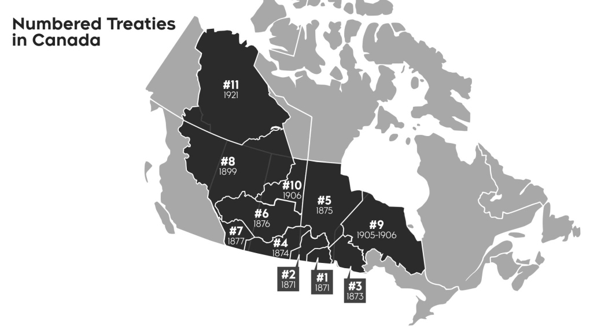
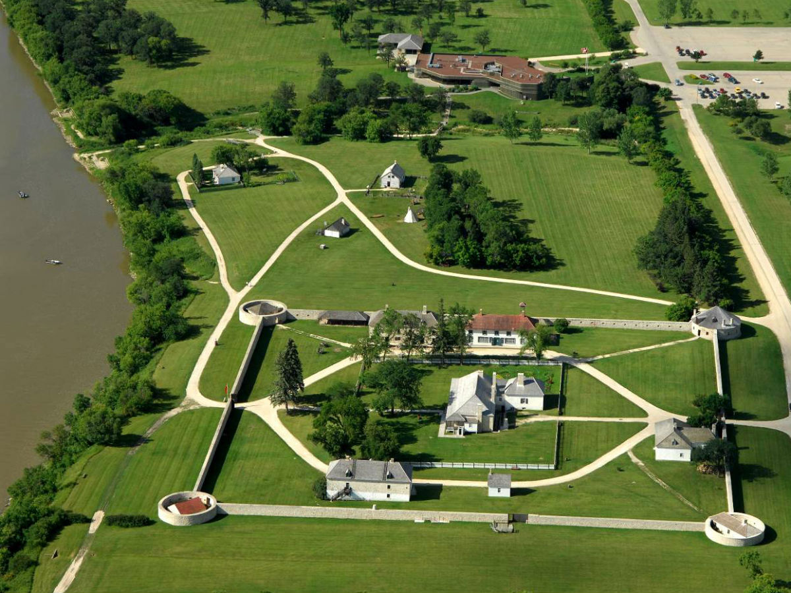

This Website is made for Middle Schoolers
Treaty One is the deal between the indigious peoples of canada and the government of canada back in 1871. This treaty was signed in Lower Fort Garry and was the first of 11 treaties that where signed across canada.
|  |
What Makes Treaty One different then other treaties across canada? First of Treaty one was the first of 11 treatys created across canada in the timespan of 1871-1930 when treaty 9 was finalised in Ontario |
|
This image is of Lower Fort Garry the location that treaty one was signed. In the treaty it stated that all families of 5 would get 160 acres and what is now 5 dollars a year which is so little compared to how much they should be getting with inflation |
 |